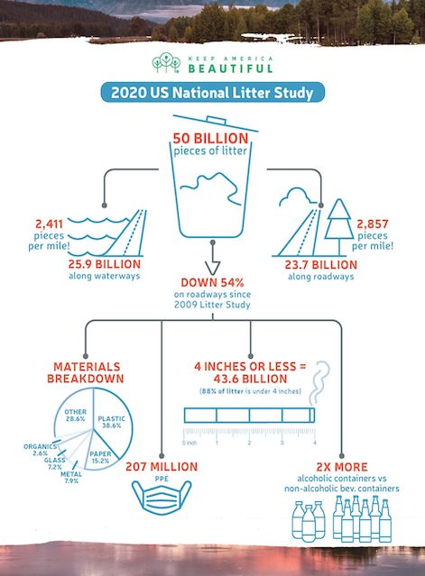

Why is it wrong to litter?
I am going to write this because I keep seeing people around me litter. I think it has become too common. The rest of this page is going to be facts about littering and other things I find interesting pertaining to the topic of littering.
Top reasons not to litter:
- It is literally so so so easy not to litter. Just put the wrapper in your pocket until you see a trash can. Or keep a plastic bag in your car.
- It makes you look bad. Like would you do that in front of your mother? Or your partner? What would they think?
- It kills animals and the enviornment. Did you know that there have been photos and videos (not ai) of squirrels hitting vapes because they mistake the nicotine fumes for food. Apparently pigs cant fly but squirrels can vape.
Worst places to see litter in public ranked:
- Literally in the bathroom. aka where there is pretty much always a bathroom.
- On the beach. They had to ruin one of the only commonly agreed upon nicely kept public spaces.
- On the highway. I cant see that well so I get kind of scared and try and swerve to avoid hitting the litter.

Why I care about littering:
To be honest, I feel like my entire childhood was made quite worse simply because the places I lived had a lot of litter. Starting off in NYC and Connecticut, there was so much litter everywhere especially when I was little. Trash and debris were always covering the sidewalk, let alone the roads that were covered with broken bottles and things. When we eventually moved, I learned that even rich people are dirty and litter. A lot. I also started going outdoors and spending a lot of time outside, which made me notice more how litter seems to be everywhere now. And nobody really talks about it. I live in a costal town, so most of my time was spent at the beach. The water near it was the long island sound, so I noticed how dirty the water seemed. Come to find out 8 million tons of plastic waste end up in the ocean every year. Honestly, I also started caring more when in high school, I noticed how common it was to litter when at a party or when people are under the influence of alcohol. I thought it was really gross, and thought it was common to be taught that littering is wrong. I guess not.